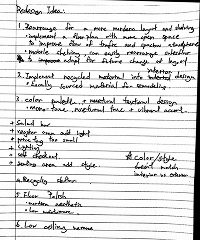
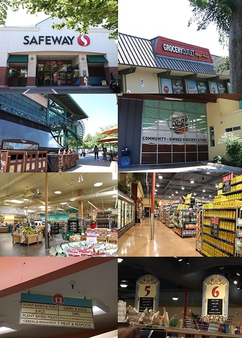

This project focused on identifying and addressing physical and experiential challenges within the Davis Food Co-op grocery space. Through user interviews, field observations, and competitive research, we proposed strategic redesign solutions aimed at improving customer experience and store usability.
I began by visiting the Davis Food Co-op in person and conducting field research to understand the user experience from a customer’s point of view. I documented wayfinding issues, product placement patterns, and information hierarchy flaws on signage and shelves.
I also conducted interviews with both customers and staff to gather perspectives on usability pain points and customer needs. The most common feedback was about confusing aisle layouts, unclear product labeling, and the overwhelming visual density of signage.
I also compared the co-op’s in-store experience with other regional grocers such as Nugget Market and Trader Joe’s, looking at how they approach layout clarity, shelf tagging, and branding. This provided valuable benchmarks for improving the co-op's in-store UX.
 One of the main challenges was narrowing down a focused direction from a broad set of user issues and stakeholder needs. There were many overlapping concerns—like signage confusion, shelf overcrowding, and inconsistent branding—and it took careful research to prioritize what changes would have the most impact.
Through this project, I strengthened my ability to observe environments through a UX lens and translate real-world pain points into clear opportunities. While we didn’t implement a new visual layout, the groundwork of research and stakeholder input laid a strong foundation for future development.
Based on our findings, a future iteration of this project could involve developing interactive wireframes for improved in-store navigation, digital menu boards, and a branded wayfinding system. I’d also like to prototype a refreshed homepage for the co-op website to match the in-store experience and increase clarity around co-op values and services.